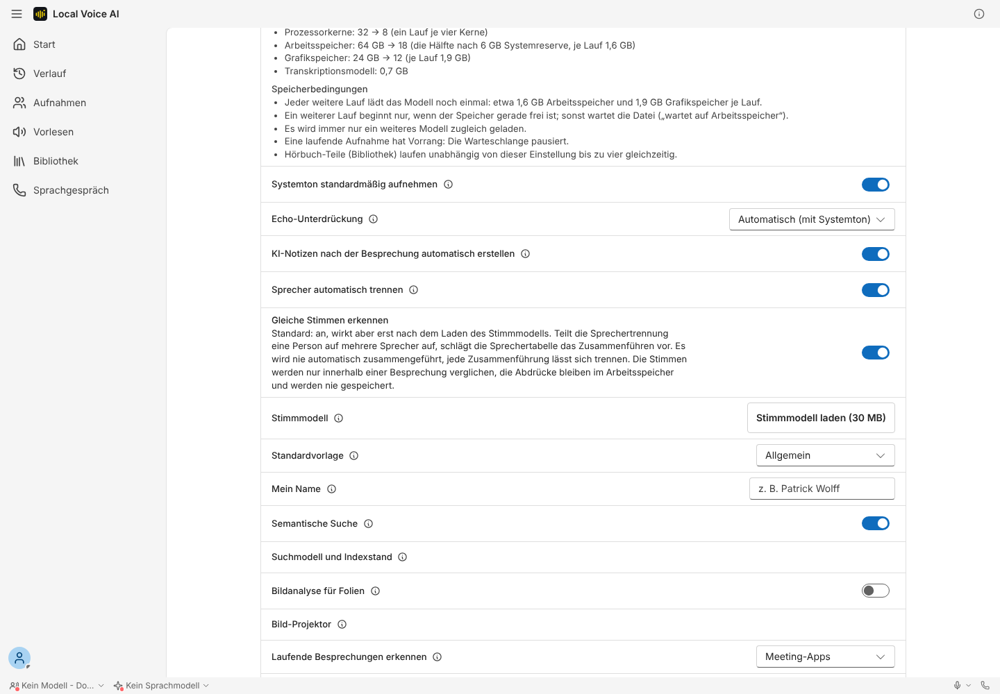
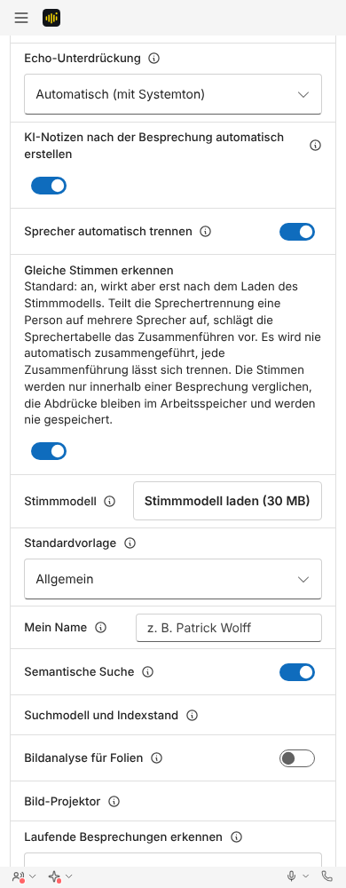
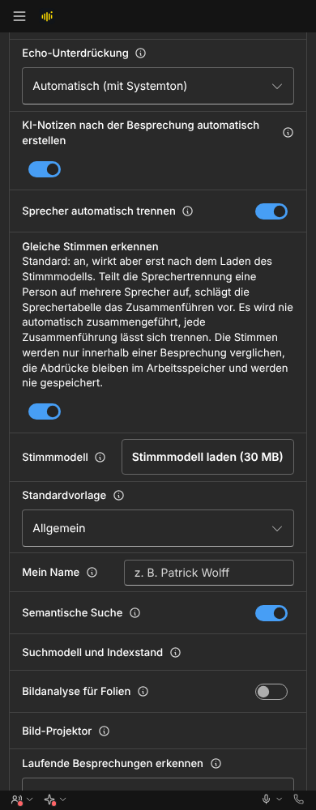
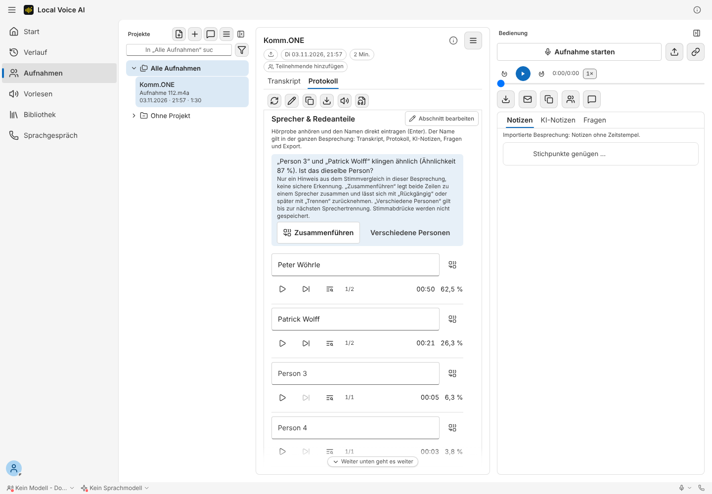
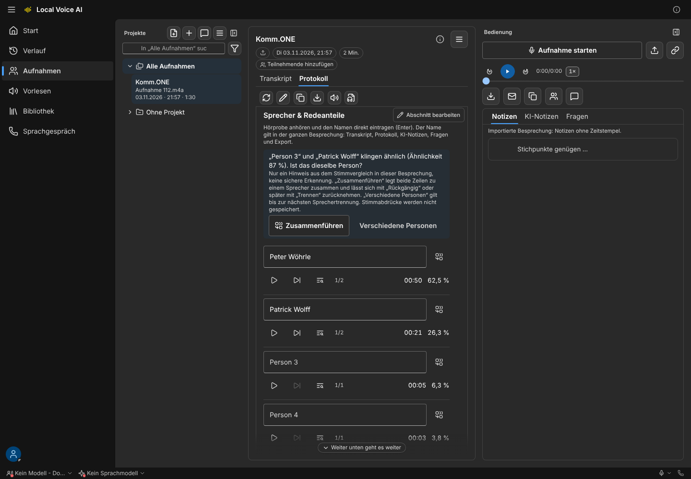
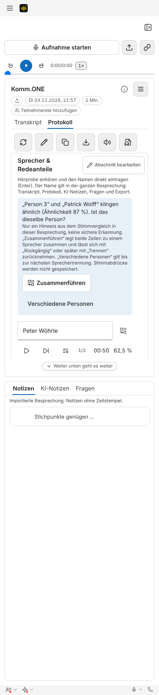
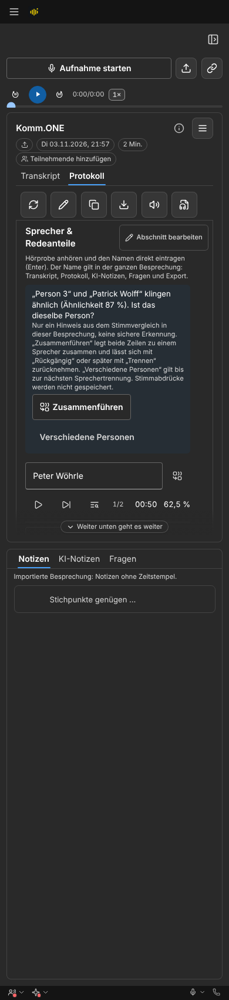

Gleiche Stimmen erkennen (Stimmprofile, Schritt 2a)
Local Voice AI · Besprechungen › Protokoll › Sprecher & Redeanteile und Einstellungen › Diktat › Besprechungen · Bilder aus tests/meeting-speaker-merge.spec.ts und tests/voice-suggestions-setting.spec.ts (Playwright, Tauri-Attrappe). Folge zu #266/#267.
Was neu ist
- Vorschlag in der Sprechertabelle: „„Person 3“ und „Patrick Wolff“ klingen gleich (87 % ähnlich). Ist das dieselbe Person?“ mit „Zusammenführen“ und „Verschiedene Personen“. Darunter klein: „Erkannt am Stimmabdruck in dieser Besprechung. Er wird nicht gespeichert.“
- Zusammenführen nutzt denselben Weg wie #267: Es bleibt der Sprecher mit der längeren Redezeit, „Rückgängig“ und „Trennen“ gelten wie gehabt.
- Verschiedene Personen blendet den Vorschlag aus und merkt sich das Paar bis zur nächsten Sprechertrennung (nur Sprechernummern, kein Abdruck).
- Einstellung „Gleiche Stimmen erkennen“ (Standard an) und Zeile „Stimmmodell“ mit dem Knopf „Stimmmodell laden (30 MB)“. Ohne Modell erscheint kein Vorschlag, es wird nie von selbst geladen.
4 · Einstellung




5 · Vorschlag in der Sprechertabelle




Gemessen
- Beide Knöpfe im Hinweis sind mindestens 44 px hoch, liegen ganz im Hinweis, sind nicht abgeschnitten und nicht überdeckt (
elementFromPoint). Keine horizontale Scrollleiste bei 390 und 1440 px. - Kalibrierung an Mini-LibriSpeech (26 Sprecher, 650 Paare): ab 8 s Sprache je Sprecher 100 % Treffer und kein Fehlvorschlag bei der Schwelle 65 %. Tabelle im Konzept (
docs/konzept-stimmprofile.md). - Filterbank und Modell in Rust liefern dieselben Werte wie die Python-Referenz (kaldi-native-fbank, onnxruntime 1.24 und 1.29).
Datenschutz
- Abdrücke nur im Arbeitsspeicher, nur innerhalb einer Besprechung, nie gespeichert, nie im Log, nie mit anderen Besprechungen verglichen. Ausschalten vergisst sie sofort.
- Stimmprofile über Besprechungen hinweg (Art. 9 DSGVO, Einwilligung je Person) kommen erst mit Schritt 2b nach Freigabe.